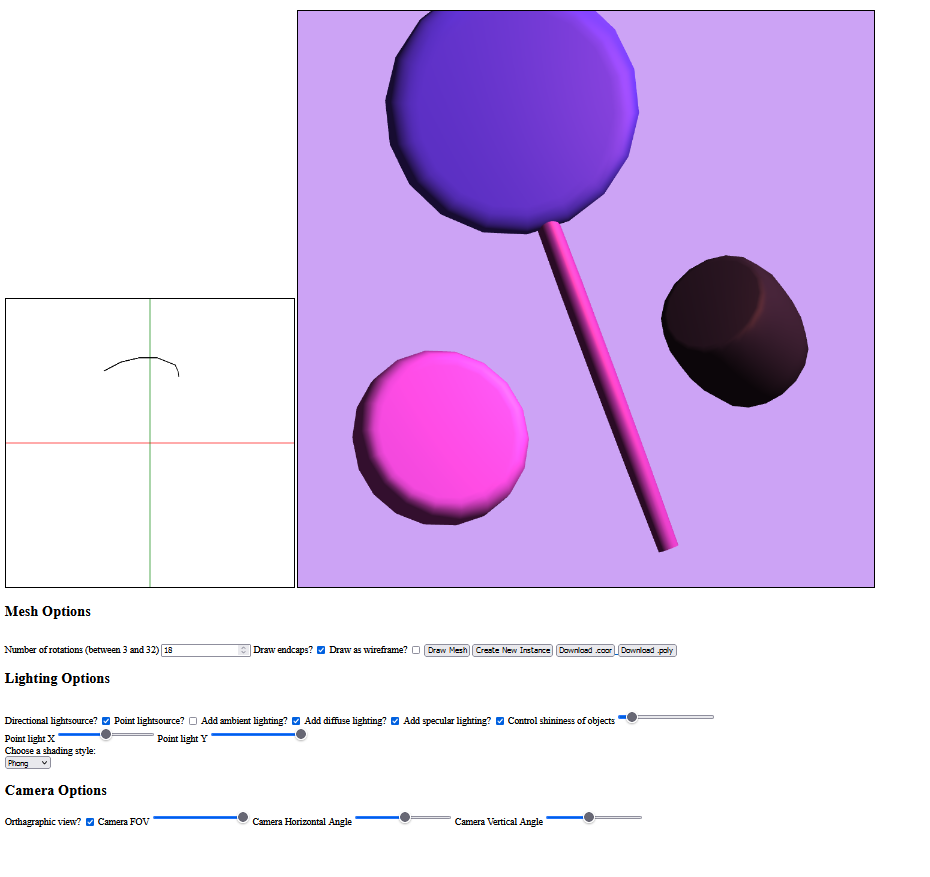
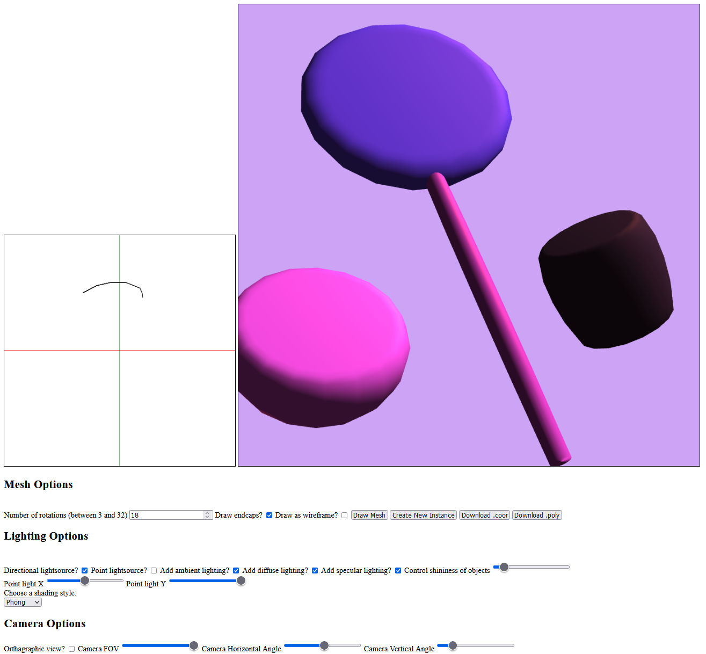
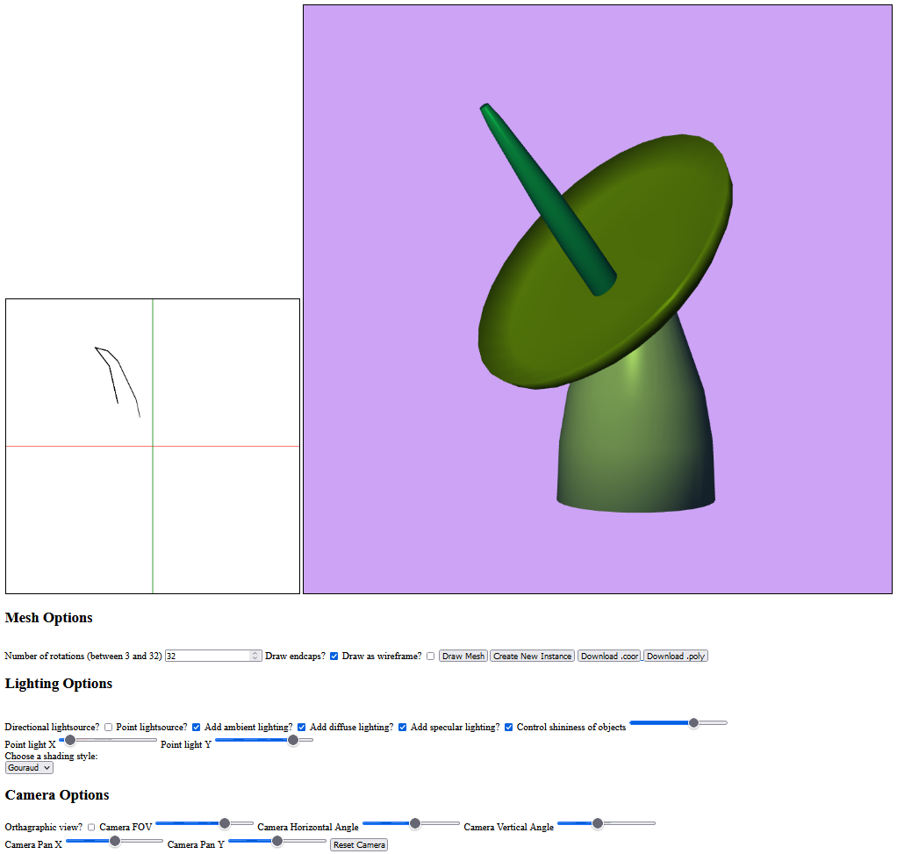
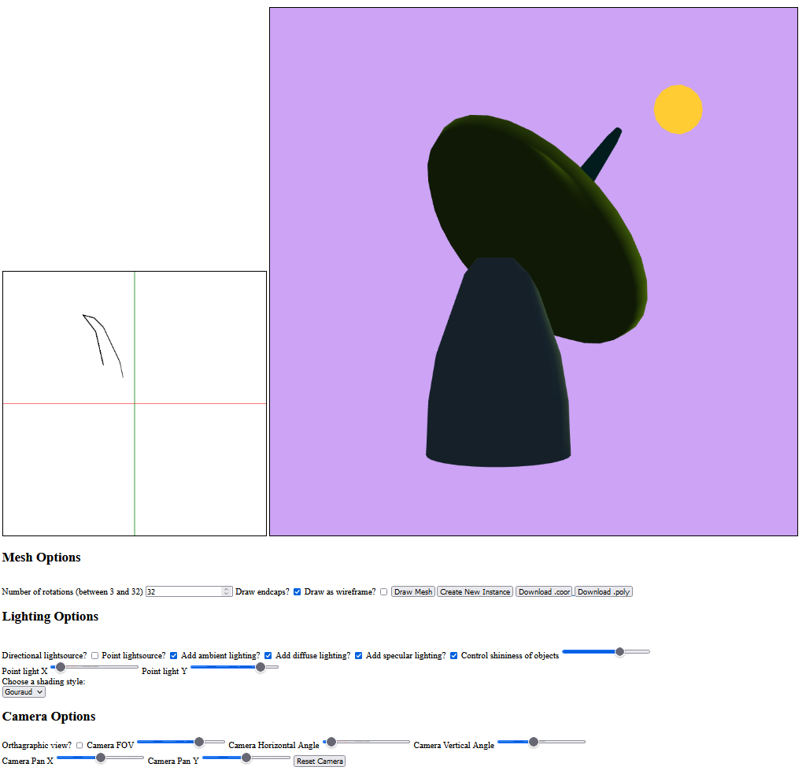

Carolyn M Hope
3/9/2024
Provides an interactive canvas on which a user can plot a polyline with sequential left clicks,
and then end the drawing with a final right click. Once the polyline is complete, the user can
generate a 3D Surface of Revolution (SOR) of the curve rotated around the z-axis. User can specify
the amount of rotations and whether to draw end caps for the shape. Several instances of this SOR
are rendered and displayed, and the user can freely move, scale, and rotate these shapes with the
mouse. User can toggle whether the SORs should be drawn as shaded models or wireframes. User can
additionally choose between a myriad of lighting and shading options. Includes perspective viewing
option and camera control.
Sandbox
Sandbox Javascript
Example of Program:



